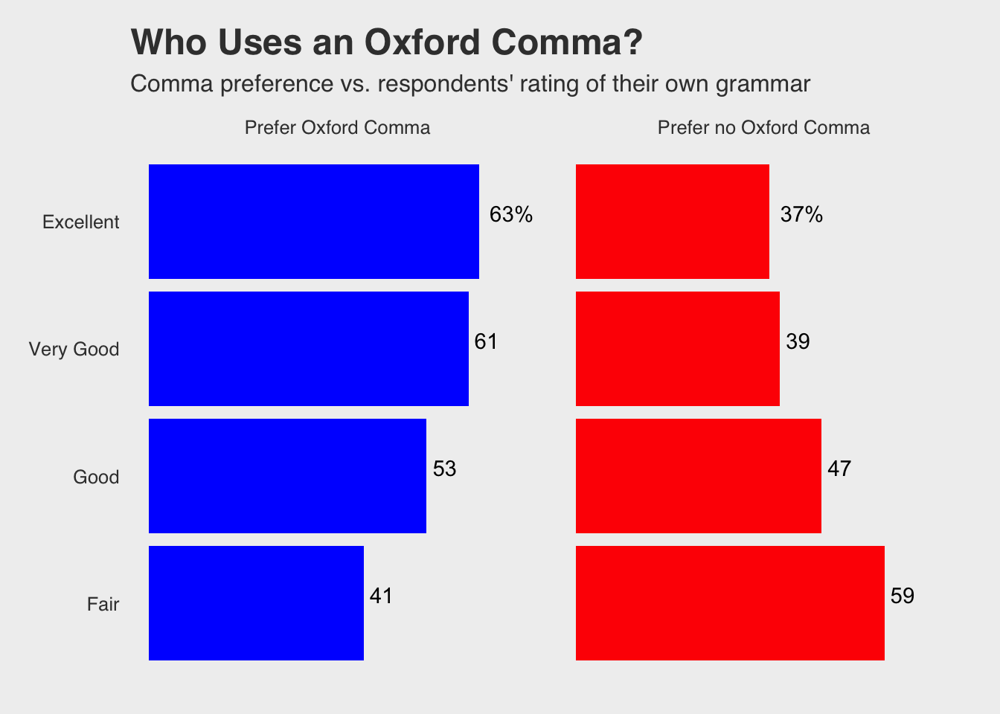

AmandaSkarlupka-Visualization
Amanda Skarlupka
9/26/2019
The graph that I decided to recreate was from FiveThirtyEight’s github reposistory.

Bargraph
I copied the data from the github repository. The first thing I want to do is look at the data and see what I have. I need to determine how many variables I’m working with and if they match to the data on the figure. If they don’t match then I’ll have to determine how they were manipulated.
library(readr)
comma_survey <- read_csv("~/Documents/Data Science/AmandaSkarlupka-Visualization/Data/comma-survey.csv")## Parsed with column specification:
## cols(
## RespondentID = col_double(),
## `In your opinion, which sentence is more gramatically correct?` = col_character(),
## `Prior to reading about it above, had you heard of the serial (or Oxford) comma?` = col_character(),
## `How much, if at all, do you care about the use (or lack thereof) of the serial (or Oxford) comma in grammar?` = col_character(),
## `How would you write the following sentence?` = col_character(),
## `When faced with using the word "data", have you ever spent time considering if the word was a singular or plural noun?` = col_character(),
## `How much, if at all, do you care about the debate over the use of the word "data" as a singluar or plural noun?` = col_character(),
## `In your opinion, how important or unimportant is proper use of grammar?` = col_character(),
## Gender = col_character(),
## Age = col_character(),
## `Household Income` = col_character(),
## Education = col_character(),
## `Location (Census Region)` = col_character()
## )## # A tibble: 6 x 13
## RespondentID `In your opinio… `Prior to readi… `How much, if a…
## <dbl> <chr> <chr> <chr>
## 1 3292953864 It's important … Yes Some
## 2 3292950324 It's important … No Not much
## 3 3292942669 It's important … Yes Some
## 4 3292932796 It's important … Yes Some
## 5 3292932522 It's important … No Not much
## 6 3292926586 It's important … No A lot
## # … with 9 more variables: `How would you write the following
## # sentence?` <chr>, `When faced with using the word "data", have you
## # ever spent time considering if the word was a singular or plural
## # noun?` <chr>, `How much, if at all, do you care about the debate over
## # the use of the word "data" as a singluar or plural noun?` <chr>, `In
## # your opinion, how important or unimportant is proper use of
## # grammar?` <chr>, Gender <chr>, Age <chr>, `Household Income` <chr>,
## # Education <chr>, `Location (Census Region)` <chr>## # A tibble: 2 x 1
## `In your opinion, which sentence is more gramatically correct?`
## <chr>
## 1 It's important for a person to be honest, kind and loyal.
## 2 It's important for a person to be honest, kind, and loyal.## # A tibble: 3 x 1
## `How would you write the following sentence?`
## <chr>
## 1 Some experts say it's important to drink milk, but the data is inconclus…
## 2 Some experts say it's important to drink milk, but the data are inconclu…
## 3 <NA>I’m not really seeing how they got the respondent’s rating of their own grammar. So I’m just going to pull the data off of the graph itself. I created a table from the graph.
preference <- c("Prefer Oxford Comma", "Prefer Oxford Comma", "Prefer Oxford Comma", "Prefer Oxford Comma", "Prefer no Oxford Comma", "Prefer no Oxford Comma", "Prefer no Oxford Comma", "Prefer no Oxford Comma")
rating <- c("Excellent", "Very Good", "Good", "Fair")
percentage <- c(63, 61, 53, 41, 37, 39, 47, 59)
column_names <- c("63%", "61", "53", "41", "37%", "39", "47", "59")
graph.data <- data.frame(preference, rating, percentage, column_names, stringsAsFactors = TRUE)
graph.data$rating <- factor(graph.data$rating, levels = c("Fair", "Good", "Very Good", "Excellent"))
graph.data$preference <- factor(graph.data$preference, levels = c("Prefer Oxford Comma", "Prefer no Oxford Comma"))
str(graph.data)## 'data.frame': 8 obs. of 4 variables:
## $ preference : Factor w/ 2 levels "Prefer Oxford Comma",..: 1 1 1 1 2 2 2 2
## $ rating : Factor w/ 4 levels "Fair","Good",..: 4 3 2 1 4 3 2 1
## $ percentage : num 63 61 53 41 37 39 47 59
## $ column_names: Factor w/ 8 levels "37%","39","41",..: 8 7 5 3 1 2 4 6graph.data %>%
ggplot(aes(x = rating, y = percentage)) +
geom_bar(stat = "identity", fill = c("blue", "blue", "blue", "blue", "red", "red", "red", "red")) +
geom_text(aes(label = column_names, vjust=0, hjust=-0.25)) +
facet_grid(. ~ preference, space = ) +
ylim(0, 72) +
coord_flip() +
labs(title = "Who Uses an Oxford Comma?", subtitle = "Comma preference vs. respondents' rating of their own grammar") +
theme_fivethirtyeight() +
theme(panel.border = element_blank(), panel.grid.major = element_blank(),
panel.grid.minor = element_blank(), axis.title.x=element_blank(),axis.text.x=element_blank(),axis.ticks.x=element_blank())
Resources used:
I ended googling quite a bit. Here are the resources that I used and which questions I was trying to answer:
I needed to expand the y axis so that the values of by bars were visible. I thought I could move the facets apart and it wouldn’t cover the text. But it’s not that the text was covered; the text was running out of the plotting area. So I used the code ylim() from https://ggplot2.tidyverse.org/reference/lims.html.
I had to remove the x-axis labeling from the graph. https://stackoverflow.com/questions/35090883/remove-all-of-x-axis-labels-in-ggplot
I had to remove the background gridmarks from the graph. https://felixfan.github.io/ggplot2-remove-grid-background-margin/
I had to add the bar percentages. I initially had the actual values, but the excellent category has a “%” so I just created an extra variable for the labels. https://stackoverflow.com/questions/6455088/how-to-put-labels-over-geom-bar-in-r-with-ggplot2
I intially created my dataframe using this: https://www.dummies.com/programming/r/how-to-create-a-data-frame-from-scratch-in-r/
My ratings levels didn’t translate over how I put them in for some reason, so I needed to explicitly state the levels to put the bars in the correct order.